11月16日STl图纸文件分享
提取码
cnj8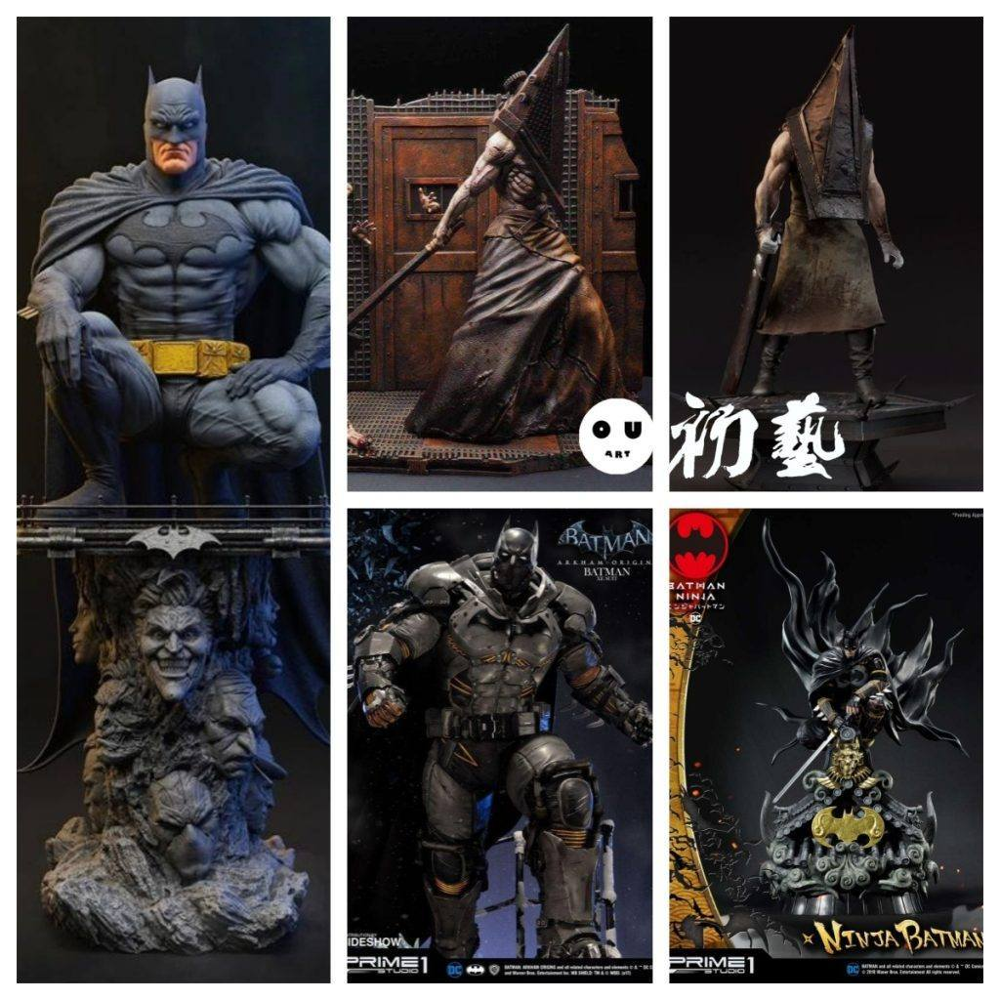
1.P1重装蝙蝠侠和日和蝙蝠侠，两组地台设计都很有特点，细节都不错，P1的两款1：4的雕像实物都非常帅，模型的精度有略胡一点但是分件和造型都有可以学习的地方。蹲姿的蝙蝠侠仅仅做造型参考，没有模型文件。
链接：https://pan.baidu.com/s/1C1ffExZWIgzQdjfvr_lT8g
提取码：cnj8
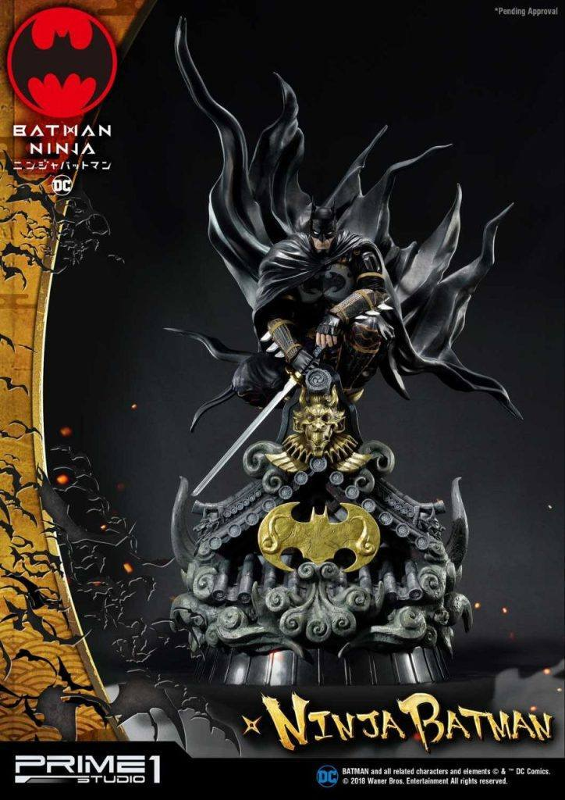

链接：https://pan.baidu.com/s/1E1m1fkMp-xmxCibL8hGUnQ
提取码：qbin
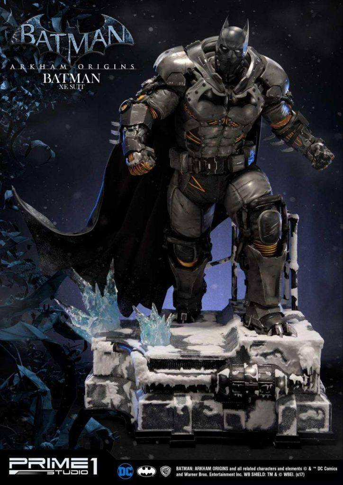
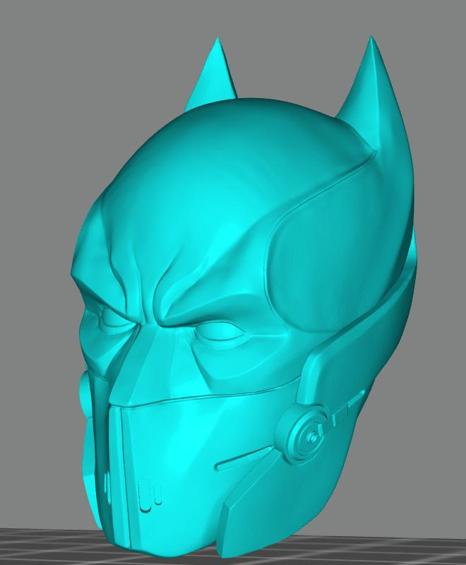
2.三角头两个造型，细节都是不错的，nomnom的这个场景更帅一些，头部的细节足够，做金属旧化练习非常好。
链接：https://pan.baidu.com/s/12eMHdXu0hJKdRTRRZqheaw
提取码：xn3s
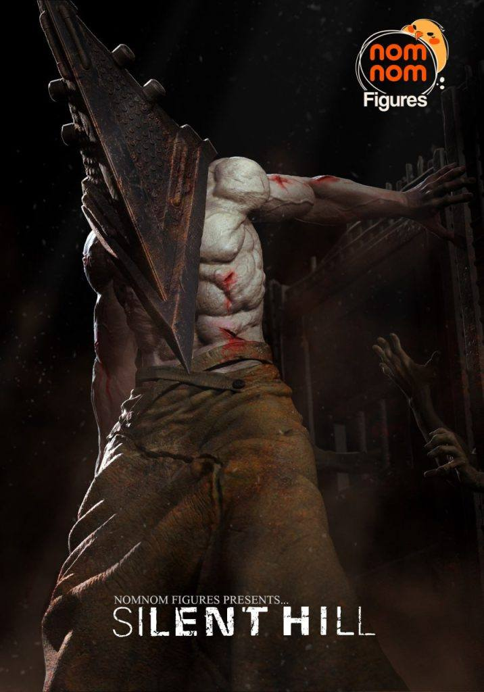

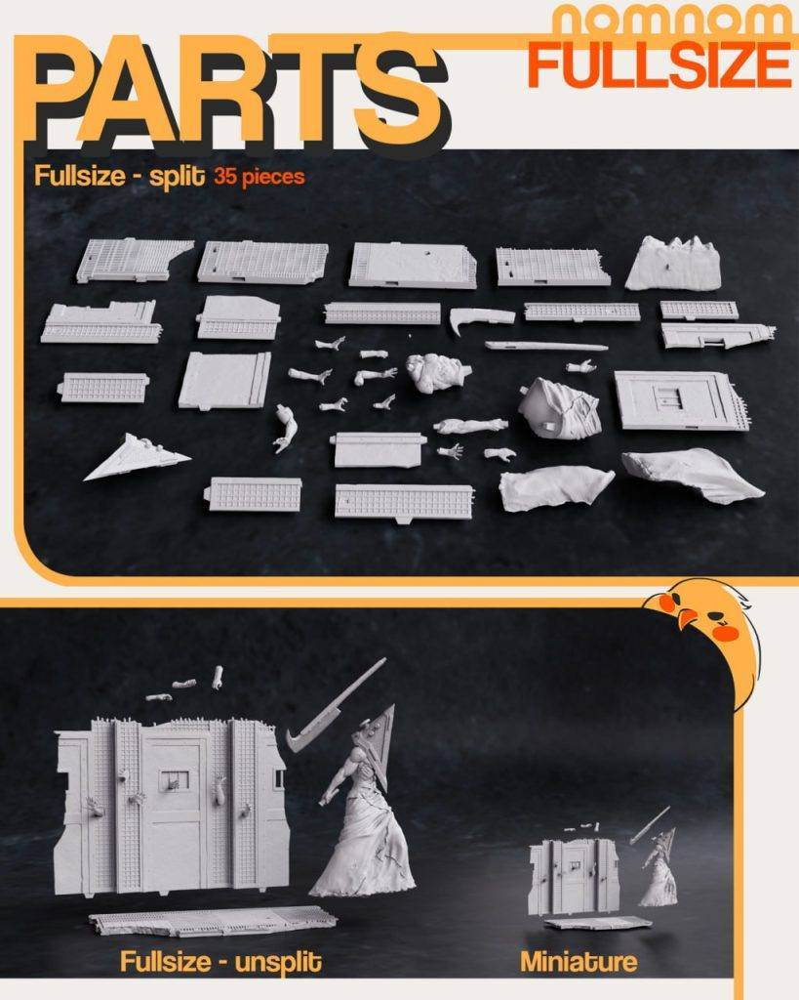

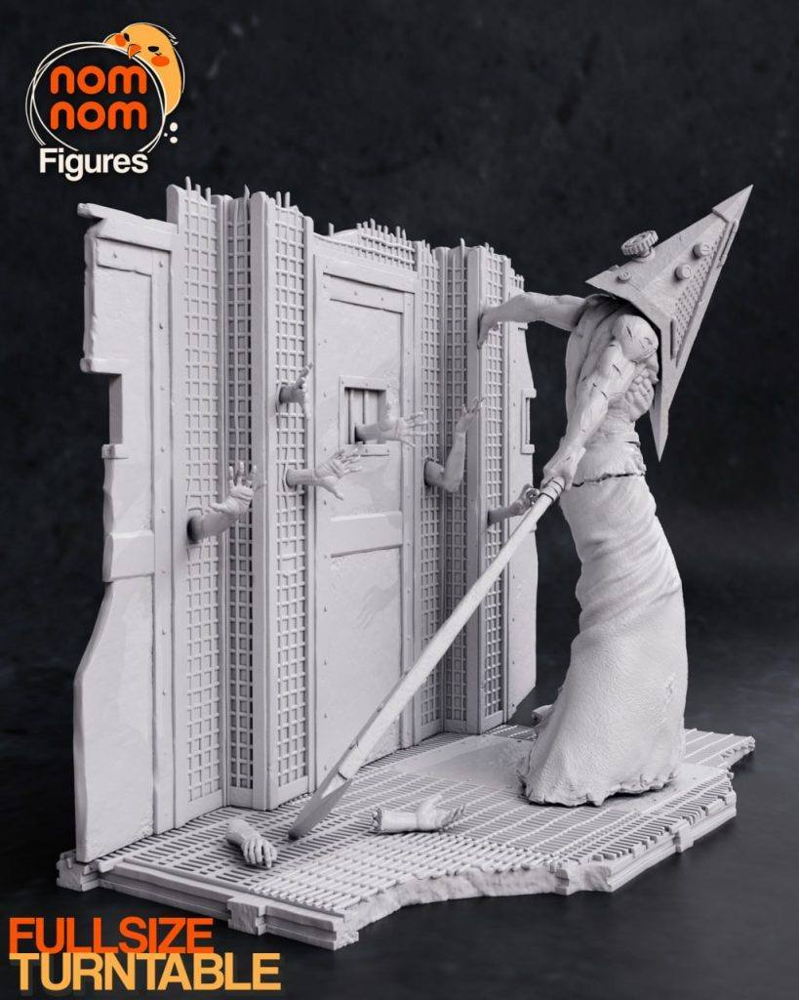
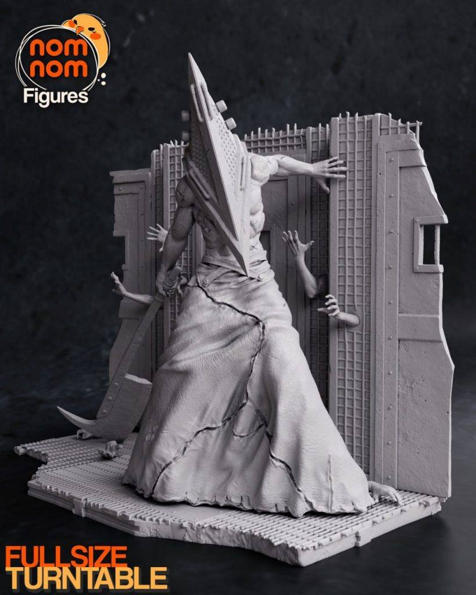
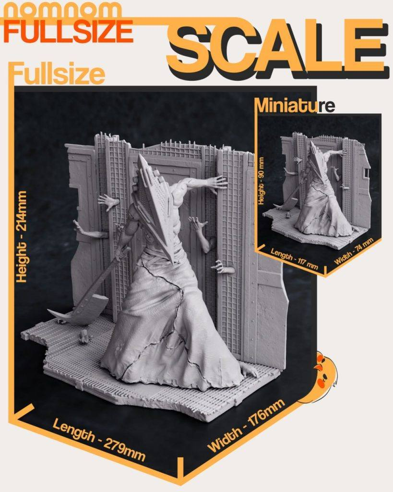
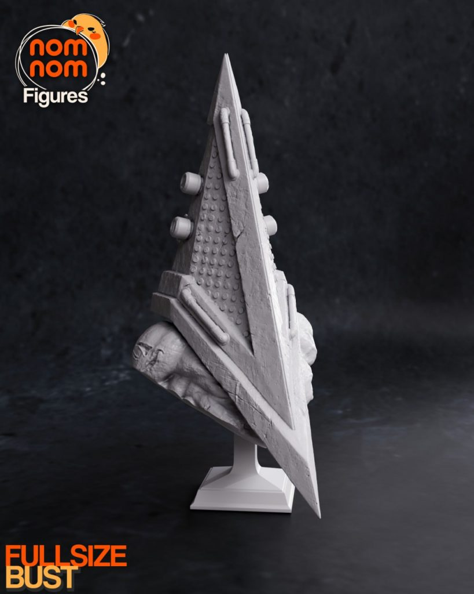
链接：https://pan.baidu.com/s/1XgAB258uS4Ptg26vetPK4A
提取码：0l4l
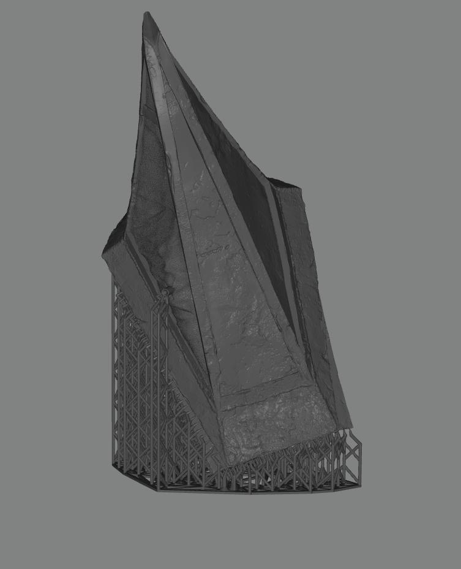
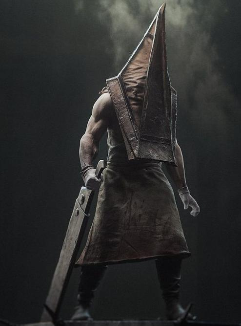
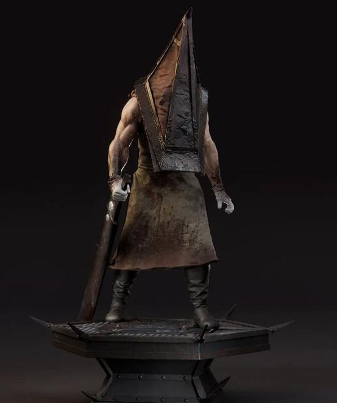


以上内容仅供个人使用（非商用）
ONLY for PERSONAL (NON-COMMERCIAL) use.
加群获得更多免费模型！